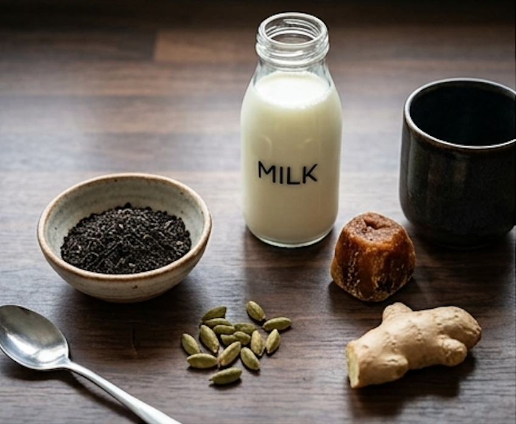
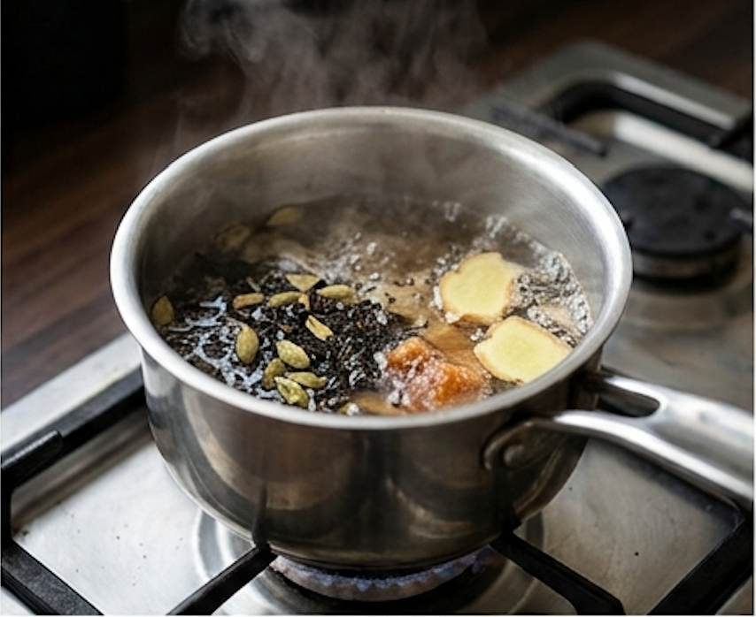
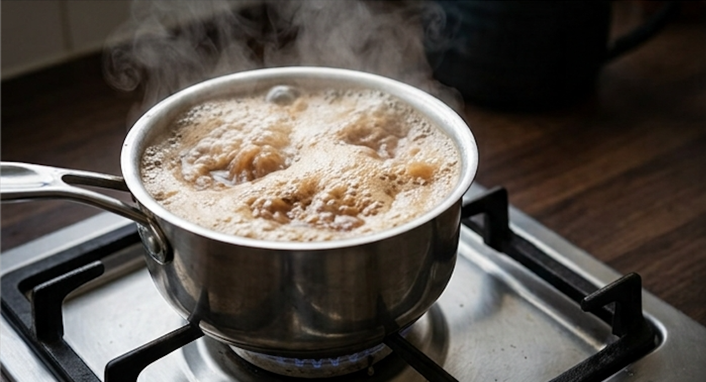
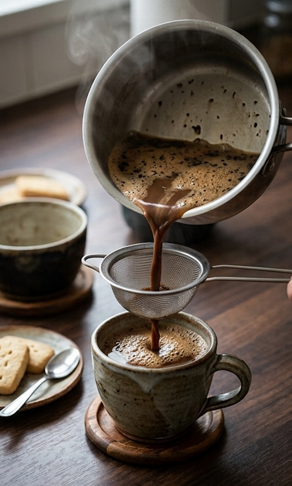

How to Make the Perfect Cup of Chai
By Sukhman Sandhu
A simple guide to making a warm, flavorful cup of chai at home.
Chai Recipe Guide
Step 1: Gather Your Ingredients
The basic ingredients for one cup of chai are loose black tea, cardamom, and milk.
Optional ingredients include your choice of sweetener, such as sugar or jaggery. You can add the sweetener at the beginning, or wait until the end so each person can sweeten their chai to their liking.
For even more aroma and flavor, you can also add fresh grated or sliced ginger.
For one cup, you'll need:
- 1½ teaspoons loose black tea
- 3–4 cardamom pods
- ⅔ cup water
- ⅓–½ cup milk
- Sweetener, to taste
- Fresh ginger, optional

Step 2: Add the Spices to the Water
Start with ⅔ cup of water for one cup of chai. While the water is still cool, add it to the pot.
Use a mortar and pestle to gently crush 3–4 cardamom pods, then add them to the water. Add your choice of sweetener and fresh ginger if you'd like.
Allow the water to warm up. Once it starts simmering, add 1½ teaspoons of loose black tea. Let everything simmer together for another 2–3 minutes.

Step 3: Add the Milk and Bring to a Boil
Once the spices and tea have simmered, add ⅓–½ cup of milk, depending on your taste and how strong you would like your chai.
Bring the chai to a boil, then turn down the heat. Repeat this process three times, allowing the chai to rise to a boil each time.
After the third boil, turn off the stove and let the chai cool for about a minute before serving.
Make sure to keep your eye on the pot so the tea doesn't boil over. Turn off the heat immediately or take the pot off the stove if needed.

Step 4: Strain and Serve
Once the chai has cooled for a minute, use a strainer to remove the cardamom, ginger, and loose tea.
Pour into your favorite cup and serve as is, or pair it with shortbread cookies.
Pro tip: Dip the cookie in your chai like you would an Oreo in milk. Enjoy your perfect cup of chai!

Learn More About Chai
Chai is enjoyed by millions of people and is an important part of everyday life and social gatherings in India. You can click here to learn more about how popular chai is .
Continue the story by watching The Chai Story: How Tea Became India's National Drink .